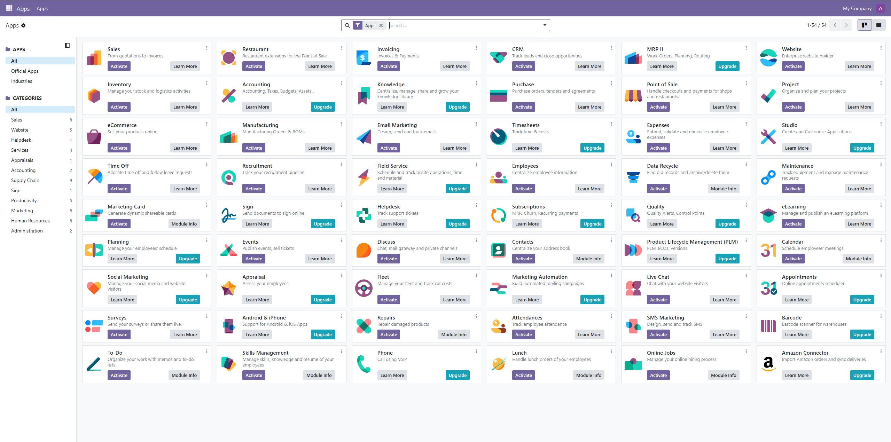
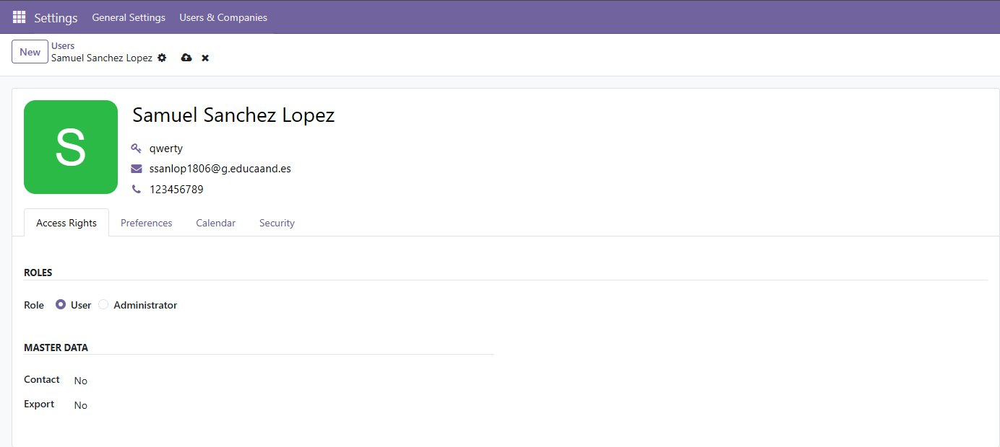

Administración y configuración
Una vez creada la base de datos, se accede a Odoo en http://localhost:8069 con el usuario y contraseña que se pusieron en la instalación. Lo primero que aparece es la lista de aplicaciones disponibles.
Configurar la empresa
Antes de nada se configuran los datos de la empresa en Ajustes → Usuarios y empresas → Empresas. Allí se cambia el nombre, dirección, CIF y se sube el logo. Estos datos aparecen luego en las facturas y en los informes que se generen.
Instalar módulos
Odoo funciona con módulos (apps), y por defecto vienen muy pocos activados. Para esta práctica se han instalado los siguientes:
- CRM
- Ventas
- Inventario
- Contactos
- Facturación
Para activarlos se va a la sección de Aplicaciones, se busca el módulo y se pulsa el botón Activar. Al instalar uno, Odoo se encarga de instalar también los que dependen de él.

Crear usuarios
Para dar de alta a más personas se va a Ajustes → Usuarios y empresas → Usuarios. Al crear uno nuevo se pone el nombre, el correo (que será su login) y los permisos en cada módulo. Cuando se guarda, Odoo le envía un correo con un enlace para que ponga su propia contraseña.

Copias de seguridad
Desde http://localhost:8069/web/database/manager se gestionan las bases de datos. Desde ahí se pueden hacer copias de seguridad en formato .zip, restaurarlas, duplicarlas o borrarlas. Es buena idea hacer una copia antes de instalar módulos nuevos o de hacer cambios importantes.